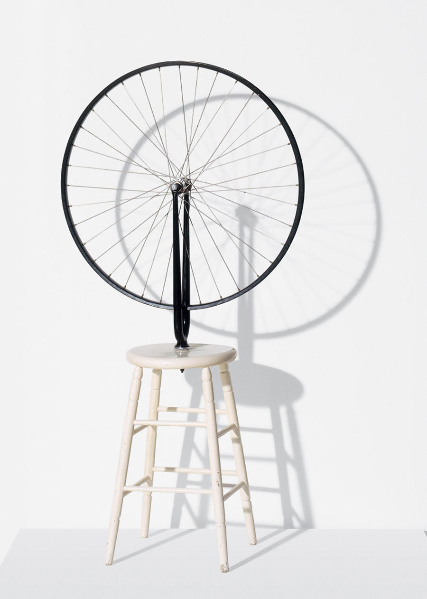
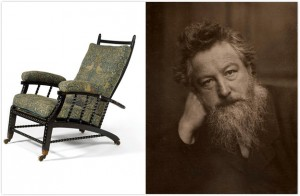
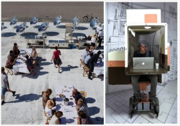
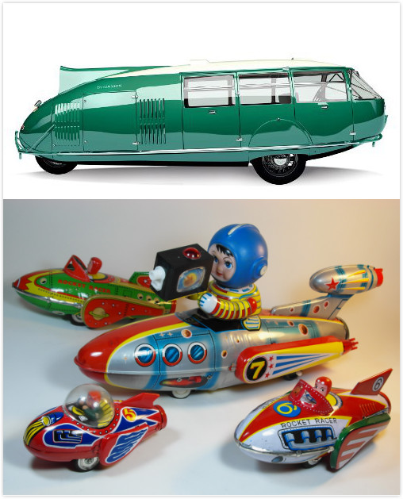
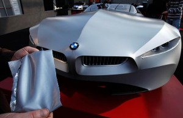
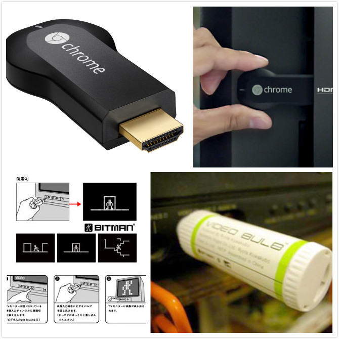

不要轻视，藏在虚无背后的东西，也有令人愉快的小小真实。
此篇是读Anthony Dunne和Fiona Raby新作《Speculative Everything》的观后感，覆盖范围是第二章“A Map of Unreality”的内容。
另外一个我们难以接触到的设计领域是概念性设计，与功能性设计不同的地方在于前者使用设计语言让人们思考，而后者用设计形式满足人们的使用需求。概念性设计中有许多中形式，很多词语在中文世界里也缺少翻译和准确定义，在对每一个词条进行搜索和研究后，我尝试解释他们：
那些概念
Speculative Design：这是一种探索性的设计方式，大部分情况设计者并不从某个具体问题出发，而是用一个精巧而充满惊喜（Wow Factor）的设计产物去激发（Stimulate）设计讨论已经后续的设计过程，它的本质是一种刺激，而不是最终的设计本身。
Critical Design：批判性设计是一种使用批判、挑战、幽默、讽刺等方式的设计方法，目的不是去解决问题，而是去挑战既有的认识并对人的感知产生影响，大部分的Critical Design都要求有一定的功能性，并与人产生互动。
Design Fiction：人们使用某种虚构作品进行设计实验的一种方式，区别于科幻作品（Sci-fi小说或者电影）往往把重点放在宣扬科技的无所不能，Design Fiction往往试验性地制造出某个未来的物体，让人在与它互动的过程中去思考整个未来世界（参考1、参考2、参考3）。
Design Future：这是未来设计师们（Futuryst）所关心的领域，他们用概念性的设计在一定范围内模拟一个未来场景，让人们思考未来，例如一系列作品表达在中国成为超级大国之后唐人街的变化。
Antidesign：在上篇文章中已经提到，Antidesign是上世纪60年代意大利出现的一次反对实用主义现代设计的运动，主张设计的物件应该让人思考，而不只是商业化的产物。
Radical Design：激进设计本身是Antidesign运动的重要一个时期，它诞生了像Superarchitettura这样的著名作品，其本身也是在冷战时期一种对19世纪初乌托邦式精神追求的一种怀念，和对未来主义的嘲讽。
Interrogative Design：这是波兰裔艺术家Krzysztof Wodiczko所做实践的总称，Wodiczko使用设计和技术的结合，用批判性的方式去放大非主流的社会和文化现象，例如著名表达对老兵关注的“Out of There”。
Design for Debate：除了去预测未来，另外一种方式是通过实验建立另外一种未来场景，去辩论究竟哪种未来是我们可以接受的，以及技术给我们带来的可能后果（参考）。
Adversarial Design：由Carl DiSalvo提出的专门针对政治这个话题的设计方法，利用设计和技术的结合达到政治影响力最大化的效果。
Discursive Design：使用功能性的物体进行创意的表达，让人们对已经存在的东西进行怀疑、讨论、和挑战，最终用一种互动的方式进行思考。
Futurescaping：用以协作设计、合作创造（Co-Creation）、和故事化（Storytelling）等手段去拥抱社会、政治、文化、科技，去尝试描述一个我们未曾思考过的未来。
事实上，这些概念性设计所探究的，都是一种“可能性”或者“另外一种选择”。对于功能来说，黑白分明的两端便是“工作”或者“不工作”，它是基于现在的；而概念所表达的是灰色的“也许是”或者“也许不是”
那些不真实的设计
概念性设计不像由商业和功能驱动的设计总有具体的问题和方法，它的领域很广，很多分类都是基于方法本身的，方法又有重叠，而不是按照问题进行分类，就像交互设计和视觉设计的区别是前者解决人机交互的问题，而后者解决美学问题。
当你看到我在之前讲述的诸多概念，你会疑虑他们为什么那么相似，这便是原因，任何以“让人思考而非解决问题”的设计都可以冠以一个名字，只要它们的方法不同。
杜尚（Marcel Duchamp）创造性的首次实践是1913年把一个带有车轮的自行车前叉倒置在一张木制圆凳上，西方现代艺术就这样开始了，而杜尚所思考的，是如何让平常之物赋予一种新的意义，这种赋予来自于一种新的组合、放置角度、甚至一个新名词。

直到1960年代，Sol LeWitt才开始真正定义这种从创意中产生艺术的艺术形式，诸如：
概念（concept）与创意（idea）不同，前者是方向，后者是其组成，创意是对概念的实现。
这种依靠创意组成的概念设计最常见的领域是展会和广告领域，在时装领域也有把服装作为一种作品去表达设计师语言，例如Pierre Cardin在1960年代受宇航时代影响所设计的系列服饰，目的并非商业化，而是试验性地展示可能性。
家具设计领域长久以来把“椅子”作为表达设计理念的传达物，不单单只是表达结构和美感，还有对社会、文化、政治的映射。有很多著名的设计师同样也是伟大的社会思想家和改良者，William Morris是19世纪英国著名的作家、设计师、同时也是一位影响深远的社会改良家，他对于设计界后世概念性设计发展的影响不可谓不深远。

William Morris是一位马克思主义者，他认为资本主义的本质是竞争，通过竞争来刺激生产，在这样一种体系中，不同程度和意义上“战争（War）”成为生活的全部，最能体现他对于人类社会发展观点的《我们如何生活以及我们该如何生活（How We Live and How We Might Live ）》一文阐述：
Doesn't that seem something like war to you? Can't you see the waste of it—waste of labour, skill, cunning, waste of life in short?
他所羡慕的是中世纪那种手工业者兴盛的时代，人人都乐于制造富有美感和实用的物件，而不是大规模生产时代中对利润的追逐让人们失去了创造的能力，这样的思想正是后世概念性设计发展的源头——作为设计师，我们如何去用设计帮助人们进行思考，甚至改良这个世界。
虽然“乌托邦”式的社会改良正在消弭在现代社会的引擎之下，但仍然有许多设计师受着前辈的影响，或多或少，而形式大部分在于对于现有行为（而非社会）其他可能性（Alternative）的探究，例如Studio Makkink and Bey的《慢车（Slow Car）》、以及Marti Guixe在11年的作品《太阳能餐厅（The Solar Kitchen Restraunt ）》

汽车领域也是概念性设计盛行的领域，汽车设计师热衷于设计未来趋势从而引导客户。远在1930年代，Buckminster Fuller的Dymaxion Car就开始用概念的方式展示汽车的未来是低耗能以及速度。有趣的是，这和80年代流行的“宇宙电视车”极为相似。

而现在汽车工业中的概念创新更多地尝试在材料和技术上进行创新，并不在政治或社会的层面进行讨论，例如BMW使用纤维材质的概念车GINA。

商品化的限制
概念性设计的局限性在于难以商品化，这也是为何大部分的概念性设计来自于学生，而人们也开始意识到，尽管概念性设计有来自于难以商业化的限制，却从另外一个角度成为商业化的“引子”，是可能性的激发，而不仅仅限于概念设计本身有限的市场意义。
例如，日本数字艺术家Ryota Kuwakubo在2005年制作的一个插在电视机视频接口的Bitman Video Bulb——只需要插在电视上就可以播放比特人的动画，一个看似无厘头的设计，却似乎和8年以后的ChromeCast有着异曲同工之妙。虽然我们没办法准确地说ChromeCast就是受到Bitman Video Bulb的影响，但这种概念性设计虽然在一开始显得那样无聊或者毫无意义，可其所带来的可能性，是谁也无法预估的。

而更多的科技企业早就已经用这样的方式来有目的地驱动这样的创新，用概念设计的方式寻找另外一种可能性，无论是惠而浦、飞利浦、GE甚至海尔，都在有意地进行这一方面的创新概念，例如GE的Aros空调，以及其背后的Quirky平台，都是从概念设计到接近大规模生产的例子。
因此不必担心Google眼镜是否成功，它很有可能只是概念到大规模商业化中的前几步而已，就像当年Ryota Kuwakubo先生如此无聊的发明一样。
写在最后
我在思考，有时我们是不是过于急于求成了，我们迫不及待的期待这一个无以伦比足以留名的设计，我们烦恼着，纠缠着，满心期待着某个可以改变很多人的机会，看低那些“无根的设计”，却又郁郁不得志，而真正忘记了哪怕是一点点的涂鸦都可以让自己会心一笑的时候。
那些站在台上的，谈着大道、讲着无形、散着硅谷味的设计英雄们所告诉我们的，是改变世界的伟大，让每个人都杀红了眼，事实上，不要轻视，藏在虚无背后的东西，也有令人愉快的小小真实。